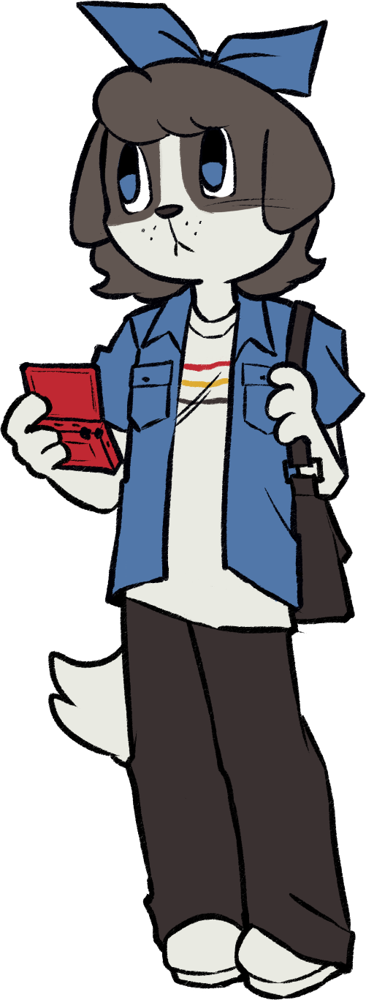
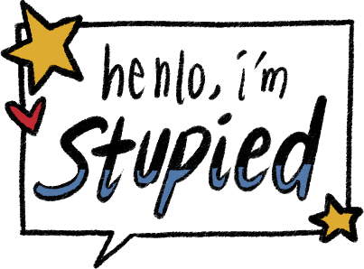

Just some nerdy wannabe artist constantly pacing around her room, wondering where it all went wrong.
I don't like having my interests be dictated by algorithms. I want to be more deliberate about how I spend my time on the internet and what to leave behind.